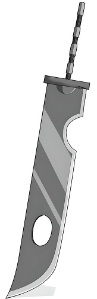

Kubikiribocho

La espada kubikiribocho, o también llamado cuchilla decapitador, es una espada gigantesca de gran peso y tamaño que tiene una característica muy peculiar, su mango es desmontable; sin embargo, la gran habilidad de esta espada radica en que no importa cuantas veces se rompa, esta siempre se regenerara gracias al hierro de la sangre recolectada de sus victimas. Los portadores de esta espada fueron:
- Juzo biwa
- Mangetsu hozuki
- Zabuza momochi
- Suigetsu hozuki
- Kakashi hatake